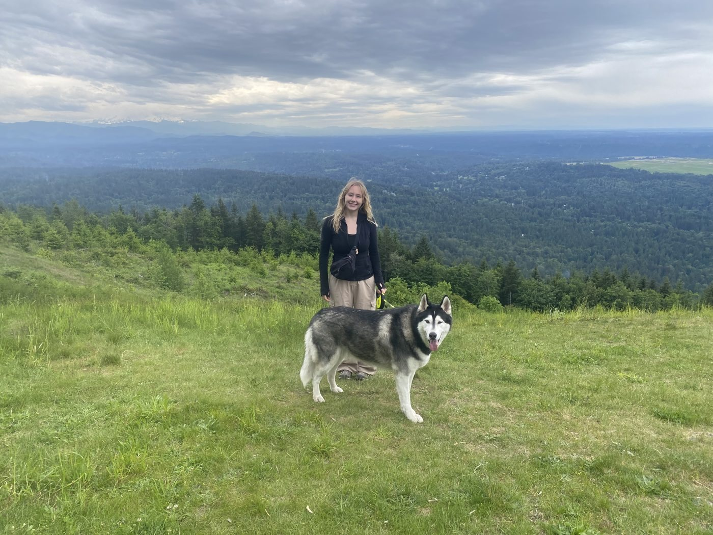

PACIFIC NORTHWEST
Trail days with my husky-malamute
Home is the Pacific Northwest, and most of my time there is spent outside with my husky-malamute mix hiking, swimming, or whatever activity the day brings. Orca is 5 years old and happy for any adventure as long as he gets snacks out of it.